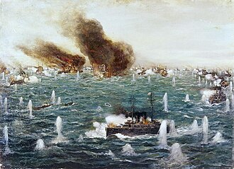
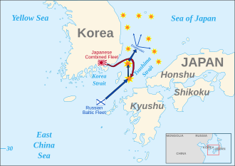

Part I · Imperialism · Chapter 3 · Russo-Japanese War, 1904–05
Inherits: Scramble for Africa (ch. 2) · Feeds: Who started 1914 (ch. 4), 1917 (ch. 5)
The War on Somebody Else’s Ground
On the night of 8 February 1904, Japanese destroyers run into the outer roadstead at Port Arthur and put torpedoes into the Russian Pacific squadron lying at anchor. Declarations of war follow the attack. The port is Chinese. Its Chinese name is Lüshunkou, and Russia has held it on a twenty-five-year lease from the Qing since 1898. For the next eighteen months two empires fight for it across the fields of Manchuria, and the empire that owns the fields declares neutrality. Chapter 2 watched imperial powers divide a continent. Here two of them go to war on land leased from a third — and most classrooms let the third country disappear.

The war is named after two countries and was fought inside a third. Whose textbook says whose ground it was?
1 The dates, dry
Dry scaffolding. These lines are the ruler; the ladder is the measurement.
- April 1895: the Treaty of Shimonoseki ends the war between Japan and Qing China, and days later Russia, Germany and France press Japan into handing back the Liaodong Peninsula. In 1898 Russia takes it instead, on a twenty-five-year lease from the Qing — the ports of Lüshunkou (Port Arthur) and Dalian (Dalny) — and builds a rail branch south to reach them from the Chinese Eastern Railway, its own shortcut across Manchuria to Vladivostok.
- 1902: Britain and Japan sign an alliance. Negotiations over Manchuria and Korea between Tokyo and St Petersburg run through 1903 and fail.
- 8–9 February 1904: the attack at Port Arthur. The Qing court declares neutrality; the land campaigns are fought in Manchuria and Korea, over Chinese and Korean ground.
- 2 January 1905: Port Arthur surrenders after a siege of roughly eleven months. February–March 1905: Mukden (today Shenyang), the largest land battle of the war. 27–28 May 1905: the Baltic fleet, having sailed most of the way around the world, is destroyed at Tsushima.
- 5 September 1905: the Treaty of Portsmouth, mediated by US President Theodore Roosevelt, who receives the Nobel Peace Prize for it the following year. Japan takes over the Liaodong lease and the southern half of the Manchurian railway, gets southern Sakhalin and a free hand in Korea, and no money; news of the terms brings rioting in Tokyo, and Korea is annexed in 1910. Inside Russia the same year runs from Bloody Sunday in January to the October Manifesto and an elected Duma.
2 Whose ground it is
Six books in this corpus have this war inside their syllabus. Five of them narrate it. In all six there is exactly one sentence that gives the battlefield a nationality — twelve words, inside a parenthesis, in an Indian textbook, in a paragraph about Chinese schools. It is at the bottom of the table below, because the table has been ordered by one question and one only: what nationality does the ground have? Ukraine’s volume starts in 1945, Germany’s is a National Socialism booklet, Sudan’s syllabus is regional; they are in the receipts. Russia’s volume begins in 1914 and reaches back for the war twice, in a clause and a footnote, both of which turn up in the next section. Kazakhstan’s book is national history and is never a world-event column here.
| Classroom | What the ground is called | One-line tag |
|---|---|---|
| UK · Lowe 2013 |
“The government decided that the best way to prevent the western powers from treating Japan in the same way as China was to occupy neighbouring territories; first Korea and then Manchuria were ‘colonized’, but this caused two wars, first with China (1894–95) and then with Russia (1904–5). Japan was victorious in both wars; in the case of Russia, this was the first time that an Asian country had defeated one of the European great powers. It meant that Japan was now the dominant power in the Far East.” Mastering Modern World History, 5th ed. · p. 336; time chart of causes of the First World War, p. 7 |
A region, with nobody’s name on it |
| IT · Sabbatucci–Vidotto 2004 |
«Ma i russi, che già occupavano buona parte di quella regione e sottovalutavano la forza militare dei rivali, rifiutarono ogni trattativa preparandosi all’inevitabile conflitto. Furono però i giapponesi a prendere l’iniziativa. Nel febbraio del 1904, senza alcuna dichiarazione di guerra, la flotta nipponica attaccò quella russa nel Mar Giallo e strinse d’assedio la base di Fort Arthur, all’estremità meridionale della Manciuria.» “But the Russians, who already occupied a good part of that region and underestimated the military strength of their rivals, refused every negotiation, preparing themselves for the inevitable conflict. It was however the Japanese who took the initiative. In February 1904, without any declaration of war, the Nipponese fleet attacked the Russian one in the Yellow Sea and laid siege to the base of Fort Arthur, at the southern extremity of Manchuria.” Il mondo contemporaneo, Laterza 2004 · §11.2 “La guerra russogiapponese,” pp. 235–236 · “Fort Arthur” is the book’s spelling here; two lines later it prints “Port Arthur” |
Exact coordinates, no country |
| BY · Кошелев 2021 |
«Согласно Портсмутскому мирному договору Япония закрепила за собой Корею, получила от России Южный Сахалин и право на аренду китайских портов Порт-Артур и Дальний (ныне — Люйшунь и Далянь).» “According to the Treaty of Portsmouth, Japan secured Korea for itself, received from Russia Southern Sakhalin and the right to lease the Chinese ports of Port Arthur and Dalny (now — Lüshun and Dalian).” Всемирная история, 11 кл., БГУ 2021 · extract p. 71 (printed 70) |
China as an adjective |
| US · OpenStax 2022 |
“Seeking a harbor that was ice-free year-round, Russia leased land from China on the Liaodong Peninsula in 1897 and built a new port, Port Arthur. A wary Japan offered Russia free rein on the Liaodong Peninsula in exchange for Japan’s retaining control over Korea. When Russia refused to compromise, Japan attacked the Russian fleet at Port Arthur in the winter of 1904, beginning the Russo-Japanese War.” World History, Vol. 2, OpenStax 2022 · §9.3 “Colonial Empires,” p. 363 |
China as the party you lease from |
| IN · NCERT 2022+ |
“In 1905, just after the Russo-Japanese war (a war fought on Chinese soil and over Chinese territory) the centuries-old Chinese examination system that gave candidates entry into the elite ruling class was abolished.” Themes in World History, Class XI · p. 167; also “Russia, a European power, in 1905,” p. 153; timeline “Japanese navy defeats Russian fleet (1905),” p. 132 |
Chinese soil — in brackets |
| CN · 中外历史纲要 上 2019 |
「各帝国主义国家纷纷在中国划分势力范围，在从渤海到南海的中国沿海地区强租租借地：俄国强租旅大，英国租威海卫，德国租胶州湾……」 “The imperialist countries one after another divided spheres of influence in China, and forcibly leased concessions along the Chinese coast from the Bohai Sea to the South China Sea: Russia forcibly leased Lüda, Britain leased Weihaiwei, Germany leased Jiaozhou Bay…” |
The ground, named twice — and no war on it |
Read down that column and China arrives by degrees. Lowe has a region and no owner, and on page 7 the war is a single line in the time chart of the causes of the First World War — furniture, moved into place so that 1914 can be arranged around it. Sabbatucci–Vidotto have the most exact geography in the corpus with no country anywhere in it, and they are also the only book of the five that records the attack coming senza alcuna dichiarazione di guerra, without any declaration of war. Belarus turns the owner into a modifier: two ports change hands between empires and their proprietor is the adjective китайских. It is also being more careful than anybody else — the only book in the corpus that prints the imperial names beside the names on today’s map, Люйшунь and Далянь, so a student can go and find the place — and the only one that says what the war was for, «маленькая, но победоносная война», a small but victorious war meant to steady the tsarist government at home. OpenStax makes China a party you sign a lease with, three sentences before the war, and then it leaves. And then NCERT, in brackets: a war fought on Chinese soil and over Chinese territory.
The last row is the one to sit with. 中外历史纲要 上 is not thin on this ground; it is unusually thorough about it. It prints the map of the spheres of influence, it prints the 1903 cartoon of the bear and the tiger and the frog reaching for China, it states the lease in the plainest available verb — Russia 强租, forcibly leased, Lüda — and it adds a footnote so the student knows that Lüda means Lüshunkou and Dalian Bay. The book walks the reader onto the exact ground and names it twice. Then 1904 and 1905 arrive carrying other business: 1904 is the date of a school-system decree and of a letter by Sun Yat-sen, 1905 is the founding of the Tongmenghui. Five of the six in-scope books narrate this war. This one is the sixth.
The sharpest way to measure that gap is to set two of these books beside each other on the same Chinese reform. NCERT: “In 1905, just after the Russo-Japanese war (a war fought on Chinese soil and over Chinese territory) the centuries-old Chinese examination system … was abolished.” 中外历史纲要 上, in its box on the late-Qing New Policies: 「其四，推行教育改革，废除科举，兴办学堂，建立起一套较为完整的学校制度。」 — “Fourth, carry out educational reform, abolish the examination system, establish schools, and build a relatively complete school system.” Same reform, same year, an institution about thirteen centuries old going out of use. The Indian book dates it by the war. The Chinese book lists it without one.
3 What the war left
Two fleets met in the Korea Strait on the afternoon of 27 May 1905, and the Russian line was broken before dark. The Baltic squadron had sailed seven months and most of the way around the world to arrive at it. What the world carried away from that afternoon was not the ground the war had been fought over. It was a ship, and the ship was British.

The argument the battle walked into was already years old in every navy that had one: that a battleship should carry a single calibre of gun, the largest, and nothing else worth counting. Tsushima was the demonstration that ended it. The shooting had happened at ranges where the medium guns a battleship carried by the dozen were spray, and the fleet that could choose the range chose it; naval attachés sailed home and said so. HMS Dreadnought was laid down four months later and turned the argument into an object: ten twelve-inch guns, steam turbines, and the speed to fight at a distance of her own choosing. The day she floated, every battleship in every navy was second-rate, including the fleet that was Britain’s own overwhelming lead. The battle did not build her. It made her case impossible to ignore — and it converted a lead nobody could challenge into a race anybody could enter.
The corpus holds both halves of that and never the join. Lowe’s time chart of the causes of the First World War, page 7, prints “1904–5 Russo-Japanese War, won by Japan,” then “1905–6 Moroccan Crisis,” then “1906 Britain builds first ‘Dreadnought’ battleship.” Two lines apart, nothing between them, no line drawn. Six pages later the same book supplies the consequence and still no cause: the Dreadnought “made all other battleships obsolete. This meant that the Germans could begin building ‘Dreadnoughts’ on equal terms with Britain.” OpenStax describes the ship exactly — “its ten 12-inch guns, some of them mounted on rotatable turrets, and its faster speed, powered by steam turbines. Other ships of the period had only a handful of guns and not all of this size” — without saying where anyone got the idea. And the classroom whose navy is the one that sank gives the ship a different father entirely.
“Dreadnought — a type of English battleship (after the name of the first ship of this class, ‘Dreadnought’ — fearless), created in response to the naval programme of Germany. Thanks to its steam-turbine engine it was capable of developing high speed and of fighting beyond the reach of enemy torpedoes.”
RU · Всеобщая история. Новейшая история 1914–1945, 10 кл. (Просвещение 2023) · footnote, extract p. 26 (printed 25)High speed, and gunfire from beyond torpedo range: that is a description of what had happened in the Korea Strait, and it is printed on the same page as the volume’s only other mention of the place — «после поражения в Русско-японской войне», “after the defeat in the Russo-Japanese War,” six lines from the top, inside a clause about how the Entente was assembled. The clause is a timestamp on a diplomatic move. The footnote at the foot of the page is the battle’s most famous consequence with Germany’s name on it. Nothing on the page joins the two.
Now the count. Three classrooms of eleven print the Dreadnought at all: Lowe, who says it made every other battleship obsolete; OpenStax, which describes the guns and the turbines; Chubaryan, in that footnote. One of the three gives the ship a parent, and the parent is Germany. None of the eleven connects the ship to the battle — which one book names (Sabbatucci–Vidotto) and one more prints as a timeline entry, “Japanese navy defeats Russian fleet (1905)” (NCERT). So the most durable object this war left in these classrooms is a British ship with no origin, and the ground it was fought on is a parenthesis in an Indian textbook.
The race that ship restarted is the one the next chapter’s classrooms will be arguing about, and it is not the only thing 1905 sends into 1914. The defeat turned Russian ambition away from the Far East and back onto Europe, and it left German planners treating Russia as the slow power. Chapter 4 opens inside that assumption.
One object from all of it is on the seabed off Orkney. The German battleships built in the race the Dreadnought restarted were scuttled by their own crews at Scapa Flow on 21 June 1919; seven are still down there, and since the 1950s their plates have been cut and sold, because steel smelted before the atmospheric nuclear tests carries no fallout, and an instrument built to measure very faint radiation cannot be housed in a case that is faintly radioactive itself. Nobody reading this is clean either: anyone alive since the mid-1950s carries carbon-14 above the pre-war level, which is one of the ways biologists date human cells. That steel was rolled for a naval race that an afternoon in the Korea Strait made worth running. It is wanted now for the one property nobody designed into it. It has never seen a bomb.
4 Credit where due
The award, once
NCERT (IN) takes it for twelve words in brackets. “A war fought on Chinese soil and over Chinese territory” is the shortest entry on this ladder and the only one that gives the battlefield a nationality; it is also the only line in the corpus that makes this war do explanatory work inside Chinese history rather than European or Japanese history. The Indian book has no national stake in that sentence, which is this book’s thesis compressed into one parenthesis: distance is a resource, not a virtue. A smaller debt on the same page to Sabbatucci–Vidotto (IT), the only column with an actual campaign in it — the Manchurian quarrel, the undeclared attack, the eleven-month siege, Mukden, the circumnavigation, Tsushima, American mediation — and the only one of five that tells a student the war began without a declaration.
5 Where this stops being true
Limits
This ladder is six books, and five of them narrate the war. Ukraine’s volume runs 1945–2018, Germany’s is a National Socialism booklet, Sudan’s secondary history is regional; those zeros are syllabus boundaries and say nothing about this war. Kazakhstan’s book is a national history and is never a world-event column here. Russia’s volume begins in 1914, which is why it never appears on the ladder: its clause and its footnote are evidence about what a 1914–1945 textbook reaches back for, not evidence about how Russia teaches 1905, and the corpus wants a Russian world-history volume covering the period that it does not have. On numbers: not one of the five gives a count of the dead — not for Port Arthur, not for Mukden, not for Tsushima, not for the villages the armies fought across. Military dead are usually estimated in the tens of thousands on each side, with wide ranges between authorities, and Chinese civilian losses in the war zone were never securely counted. On method: machine-translated files were used to find the pages and never to quote them, and every line above was verified against the original-language extraction. Belarusian and Russian page numbers are given as extract page with the printed page in brackets; Chinese printed pages run four behind the extraction.
The Chinese zero is the chapter’s load-bearing claim, so state its limits precisely. It is a zero in this volume — 中外历史纲要 上, the first of two, whose late-Qing and 1911 units are exactly where the war would sit. The searches were run on the original Chinese extraction and every non-zero stem was opened and read; they are printed in the receipts. A second-volume or supplementary-reader mention would not be caught by this method, and the Chinese curriculum is not one book. There is also a competing explanation that does not involve avoidance: this volume’s late-Qing unit is organised around Chinese actors — Lin Zexu, the Taiping, the reformers, Sun Yat-sen — and a war between two foreign powers on a neutral Qing’s territory has no Chinese protagonist to hang a lesson on. Against that: the same unit narrates other impositions in which China is the object at length, including the forced lease of the very port the war was fought for. Under this book’s rule — a zero counts as an avoidance signal when most in-scope narrators cover the topic — five of six is over the line. It remains a signal, not a verdict, and the honest form of the finding is the one the table prints: the ground is the omitted party, and the classroom standing on it is the one that omits it.
Kept verbatim because errors are data. OpenStax dates the Liaodong lease to 1897; the Russo-Chinese convention is of March 1898, and 1897 is the year the Russian squadron wintered there. Sabbatucci–Vidotto prints “Fort Arthur” once and “Port Arthur” two lines later, across a page break, and says Portsmouth recognised a Japanese protectorate over Korea “which it already held de facto since 1895” — a strong claim about 1895 that the printed page should be checked for. It also gives Japan “southern Manchuria” at Portsmouth without saying that what changed hands was a lease and a railway.
6 Receipts
- IT — G. Sabbatucci & V. Vidotto, Il mondo contemporaneo (Laterza 2004): §11.2 “La guerra russogiapponese,” pp. 235–236 (Manchurian quarrel, the undeclared attack, Port Arthur, Mukden, the Baltic fleet’s circumnavigation, Tsushima, Portsmouth); the “razza bianca” passage p. 236 — «distruggendo in un sol colpo il mito della supremazia militare e tecnologica del vecchio continente e quello di una presunta superiorità della “razza bianca”»; “pericolo giallo,” coined by Wilhelm II and topical after the war, p. 235; the 1904 war as precipitant of the 1905 revolution p. 228; the victory’s “poderoso impulso alle lotte nazionali e anticoloniali dei popoli asiatici,” opening §11.3, p. 236.
- US — OpenStax, World History, Volume 2: from 1400 (2022): §9.3 “Colonial Empires,” Port Arthur and the Treaty of Portsmouth p. 363 (printed index: Russo-Japanese War 363); the Dreadnought description §11.1, printed p. 430; Japan “emboldened by its success against Russia” p. 441; South Manchuria Railway lease and the 1931 explosion p. 525 — the one book that keeps this war alive across three chapters.
- UK — Norman Lowe, Mastering Modern World History, 5th ed. (Palgrave Macmillan 2013): Japan’s two wars and the first Asian defeat of a European great power p. 336; time chart of causes of the First World War p. 7; the naval race and “made all other battleships obsolete,” §1.4 p. 13; Japan as a power to be reckoned with p. 3; Port Arthur and South Manchuria as the 1931 background p. 69; the 1905 revolution and the October Manifesto p. 351; Korea “under Japanese occupation and rule since 1905,” ch. 21 §21.1 (≈ p. 449). Printed index: “Russo-Japanese War (1904–5) 3, 7, 336”; “Dreadnoughts 7, 9, 13, 25–7.”
- IN — NCERT, Themes in World History, Class XI (post-2022 rationalized): “Russia, a European power, in 1905” p. 153; “a war fought on Chinese soil and over Chinese territory” p. 167; timeline “Japanese navy defeats Russian fleet (1905)” p. 132; chronology “1904-05 War between Japan and Russia” p. 170.
- BY — В. С. Кошелев и др., Всемирная история, 11 кл. (БГУ 2021): the war as a domestic remedy — «правящие круги России считали, что укрепить положение царского режима поможет маленькая, но победоносная война» — and «однако русско-японская война 1904—1905 гг. обернулась катастрофой», extract p. 58 (printed 57); Japan “inflicted defeat on Russia” and the Portsmouth terms, extract p. 71 (printed 70); the war listed among the pre-1914 crises extract p. 89; timeline bar extract p. 105; synchronistic table extract p. 245.
- RU — А. О. Чубарьян, Всеобщая история. Новейшая история 1914–1945 гг., 10 кл. (Просвещение 2023): the war’s only appearance in the narrative, «…которая, в свою очередь, стремилась к сближению с Великобританией после поражения в Русско-японской войне» — “…which, for its part, strove for a rapprochement with Great Britain after the defeat in the Russo-Japanese War” — extract p. 26 (printed 25), inside the paragraph on the formation of the Entente; the Dreadnought footnote at the foot of the same page. Volume covers 1914–1945.
- CN — 中外历史纲要 上 (2019). 0 mentions Stems searched in the original, across the whole volume: 日俄 · 俄日 · 日俄战争 · 对马 · 旅顺 · 朴茨茅斯 · 朴次茅斯 · 满洲 · 沙俄 · 俄国 · 奉天 · 1904 · 1905. Every non-zero stem was opened and read: 对马 appears once, inside 对马克思列宁主义 (“towards Marxism-Leninism”); 旅顺 appears four times — in the 1894–95 war, in a Boxer-era passage, in a Liang Qichao quotation, and on a map — but never in 1904–05; 1904 is the date of a school-system decree and of a Sun Yat-sen letter; 1905 is the founding of the Tongmenghui; 奉天 is a city on a list of places that protested the Twenty-One Demands in 1915; 沙皇俄国 is Russia arriving on the Amur in the seventeenth century. Present on the same ground: the spheres of influence and the forced leases, 第17课, printed p. 115 (extract 119), with the footnote defining 旅大 as Lüshunkou and Dalian Bay; the abolition of the examination system in the New Policies box, 第19课, printed p. 124 (extract 128).
- 0 in-scope UA (1945–2018 syllabus; its one “Порт-Артур” is the Soviet base liquidated after 1955) · DE (NS 1939–1945 booklet) · SD (Sudanese/regional syllabus 1821–1948) · KZ (national history — not a world-history column)
Now look up what your textbook calls it.